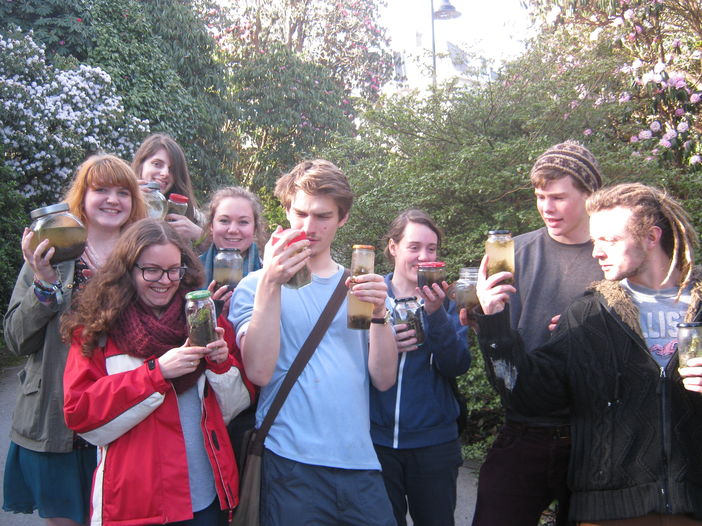
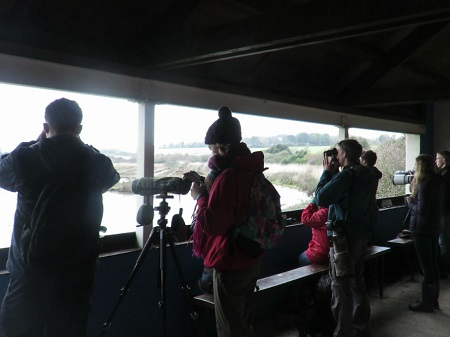
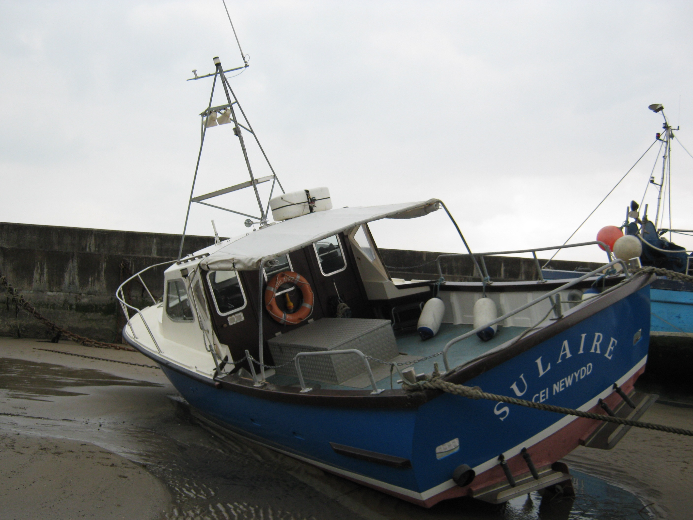
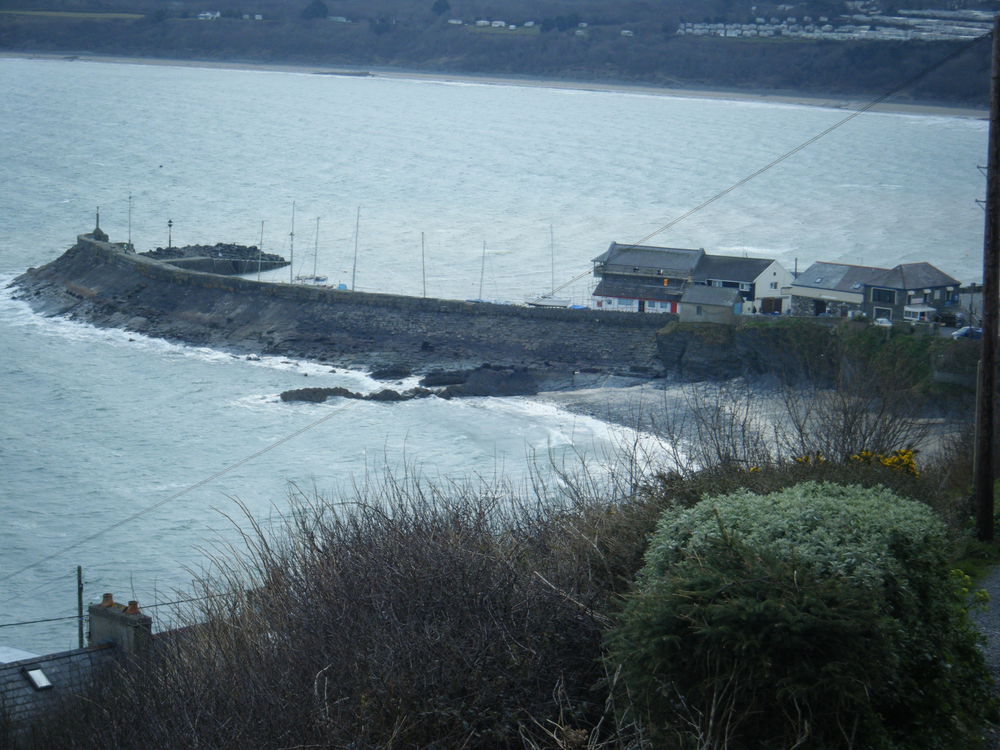
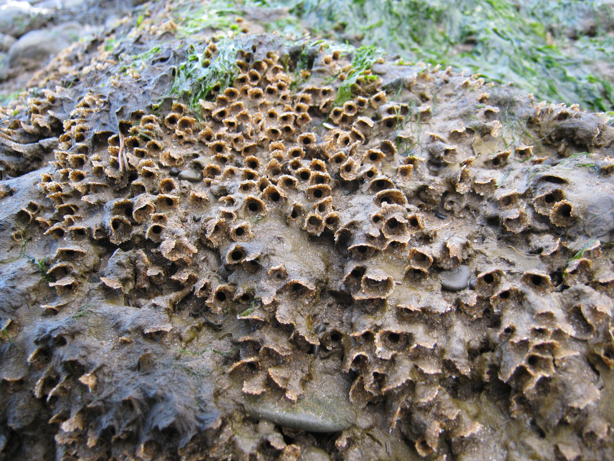
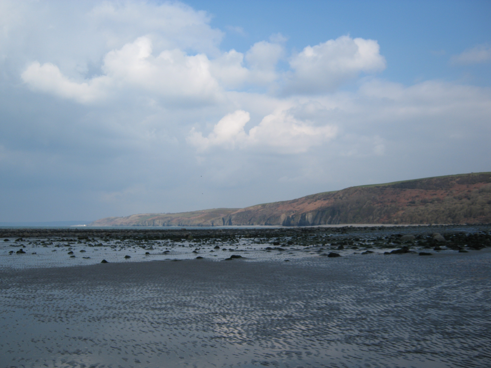

(October 2013 - present)
I was elected onto the EcoSoc committee and lead events for society members and in local schools such as ‘ID for Idiots’ plant identification workshops, excursions to local nature reserves and socials. I learnt a variety of practical skills through this experience such as; habitat management, invasive species control, marsh fritillary surveying, amphibian frog trapping, small mammal trapping and moth trapping. Furthermore, I gained skills in providing interpratation about the wildlife. I passed the MIDAS minibus training so that I could borrow the minibuses from Falvout and Exeter student's union and run more trips.
I started running an event called 'Life in Jars' where I shared my passion for creating small self-contained ecosystems in jars, you can read more about my love of creating small ecosystems here. I created a Facebook group that encouraged members to share their local wildlife sightings and any species they found but struggled to identify.
(January 2014 - July 2014)
Falmouth Aquarium was a small aquarium located on the highstreet in Falmouth, it had one floor dedicated to tropical reef aquaria and another floor dedicated to local marine wildlife. It was supported by a team of regular volunteers, with my prior experience working with aquaria as a hobby I soon became a lead volunteer and could be relied upon to carry out major tasks and use my own initiative.
Volunteering for a small marine conservation charity carrying out practical husbandry tasks and interpretation for visitors and school groups. As a lead volunteer it was my responsibility to ensure all essential tasks were carried out by other volunteers. I was required to be resourceful with solutions to any problems that occurred.
(March 2013 - July 2013)
This was a full time volunteer position of six days per week carrying out regular boat and land based cetacean surveys whilst offering interpretation to tourists about the local wildlife. We ran the visitor centre taking bookings for boat trips by phone and in person, involved handling of cash and use of card machine.
Cardigan Bay is home to one of two resisdent bottlenose dolphins populations in UK waters, the other being in Moray Firth in Scotland. Cardigan Bay Marine Wildlife Centre is the wildlife charity side of Dolphin Survey Boat Trips and now part of the Welsh Wildlife Trust. On all boat trips heading out of New Quay harbour have a research scientist (our jobs as volunteers) onboard recording GPS data of the path of the boat and any sighting seen.
Additionally, I was in charge of the 300L aquarium in the visitor centre spent a lot of time rockpooling in the local area for specimens to put into the aquarium, the rockpooling in the local area was very interesting because there were huge banks built by honeycomb worms (Sabellaria alveolata) (see photo below). A study was being carried out to investigate links between trawling in Cardigan Bay and excess sand damaging the honeycomb worms, I helped carry out some of the field work.
I also produced a daily blog for some of the placement which you can find here! Also, check out the CBMWC homepage here, I would thoroughly recommend the volunteering experience to any others looking to get into conservation and cetacean surveying.
(October 2012 - February 2013)
Ecology groups is a monitoring program comprised of volunteers that carried out ecological surveys of the flora and fauna, it was a pilot scheme starting with Wildlife Trust BCN. My role was to input and process the data from bat surveys, dormouse box surveys and bird transects, and any other administrative tasks that were required.
I volunteered in the office in Cambourne for full days from a couple of days a week, it provided a useful insight into the office-based side of conservation.
(2009 - September 2013)
This was a weekly volunteer conservation work party that visited different reserves managed by the Bedfordshire, Cambridge and Newmarket Wildlife Trust that I attended during my school holidays. I learnt practical conservation skills such as shrub clearance with loppers and saws, and clearing cut grass with rakes and pitch forks. We also did ecological monitoring such as orchid counts.
It was a very good introduction into the world of conservation, I got to see a vareity of different habitats and their constitient widlife species, learn an important set of skills and knowledge about invasive or important species within ecosystems.